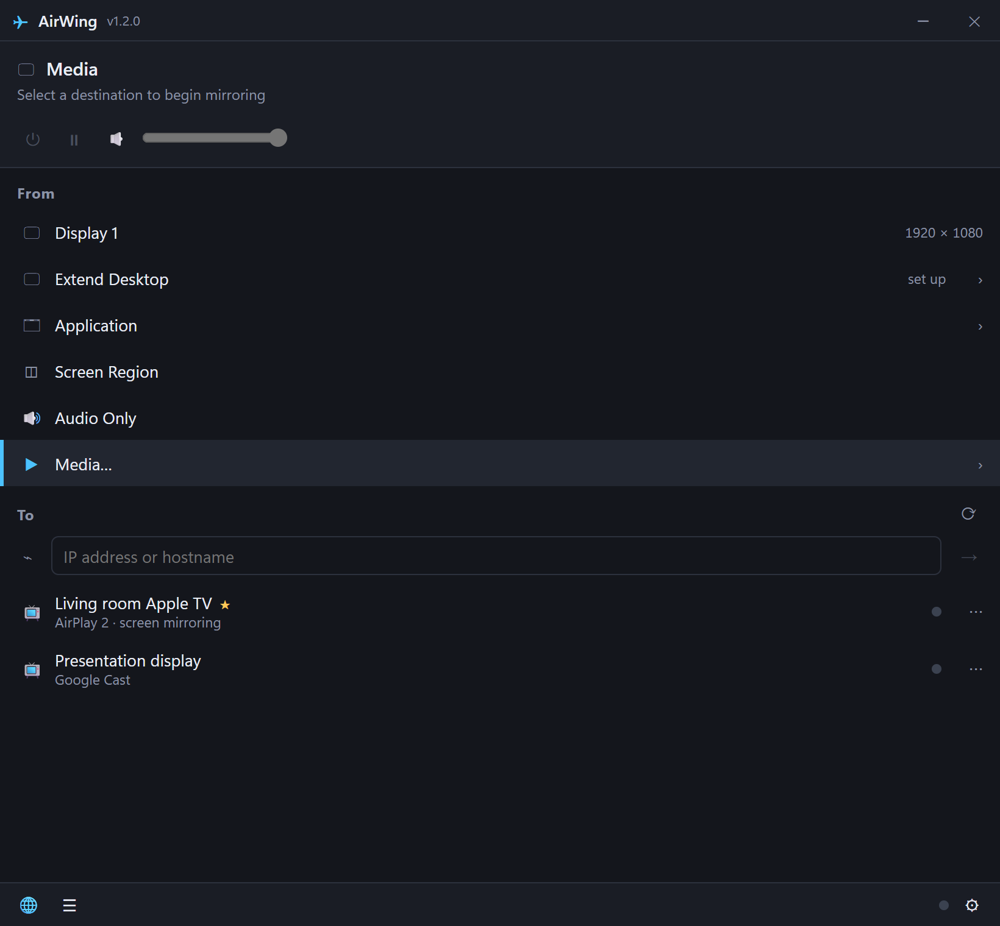
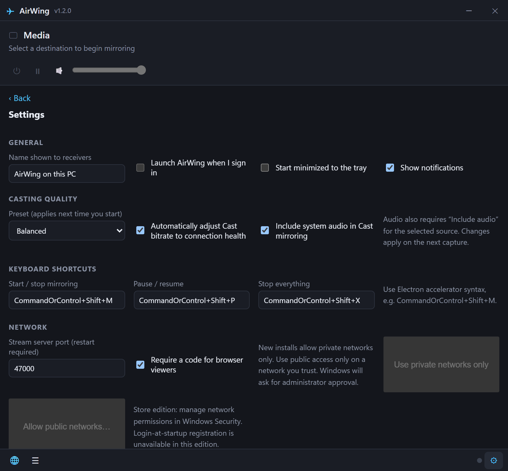
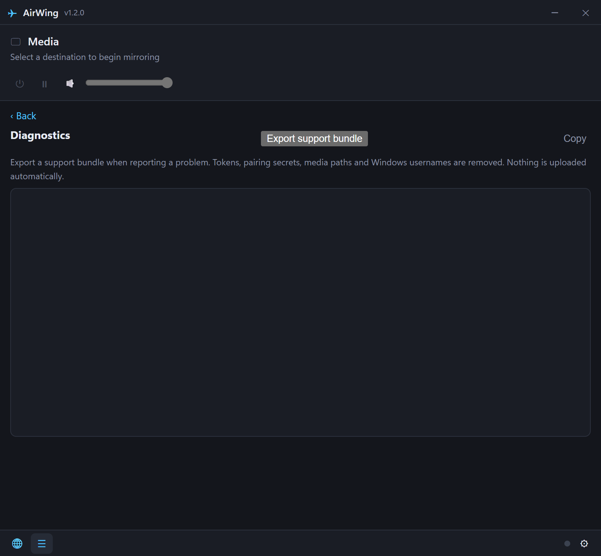

Share exactly what you choose.
Mirror a display, a single application window, or a selected screen region. Keep the rest of your desktop out of the presentation.
AIRWING FOR WINDOWS · VERSION 1.2.1
Take your ideas beyond your desktop. Mirror your screen, share a window, or stream your media to a compatible TV—without the cable.
View Microsoft Store listingStore availability is subject to Microsoft’s review.

LESS SETUP. MORE SHARING.
From a quick presentation to a video on the big screen, choose what goes out—and where it goes.
Mirror a display, a single application window, or a selected screen region. Keep the rest of your desktop out of the presentation.
Find supported receivers automatically on your network, save favorites, or add a receiver by address.
Stream media files and include system audio with supported Cast configurations. Version 1.2.1 also adds experimental AirPlay mirroring audio. Receiver capabilities determine playback and audio support.
Choose Lowest delay, Balanced, or Best picture. Optional adaptive Cast bitrate responds to reported connection loss.
The compact app window opens on the right side of your screen. Use tray controls and keyboard shortcuts, or open the local remote page on your phone to manage playback.
View available connection health and diagnostics. Export a local, redacted support report when you need help.
BUILT TO PUT YOU IN CONTROL

Quality presets, audio options, and network controls in one place.

Local diagnostics and an export you choose when to share.
Screenshots show the actual app interface with sample data. Click an image to see it full-size.
SHARE WITH INTENTION
AirWing sends selected content to the receivers you connect. Settings and diagnostic logs stay on your PC. There’s no built-in analytics collection or automatic support upload.
Use a trusted local network. Screen content can include personal information, and local browser playback is not encrypted.
Read our privacy policyBEFORE YOU CONNECT
The current edition is x64. The Store package targets Windows 10 build 19041 and later. Keep your graphics drivers current.
Apple TV, compatible AirPlay or Google Cast receivers, or a browser on your network. Compatibility varies by model and software version.
Your PC and receiver must be able to communicate. Network conditions and PC performance affect picture quality, delay, and playback.
Version 1.2.1 adds experimental AirPlay audio; physical-device audio playback and synchronization still need validation. Cast system audio requires a supported encoder, audio source, and receiver. Buffered playback may be used when realtime mirroring is unavailable.
Extended desktop requires a separately installed compatible virtual-display driver; no driver is included. AirWing does not guarantee a specific latency, resolution, or performance on every device.
MAKE ROOM FOR YOUR NEXT BIG IDEA